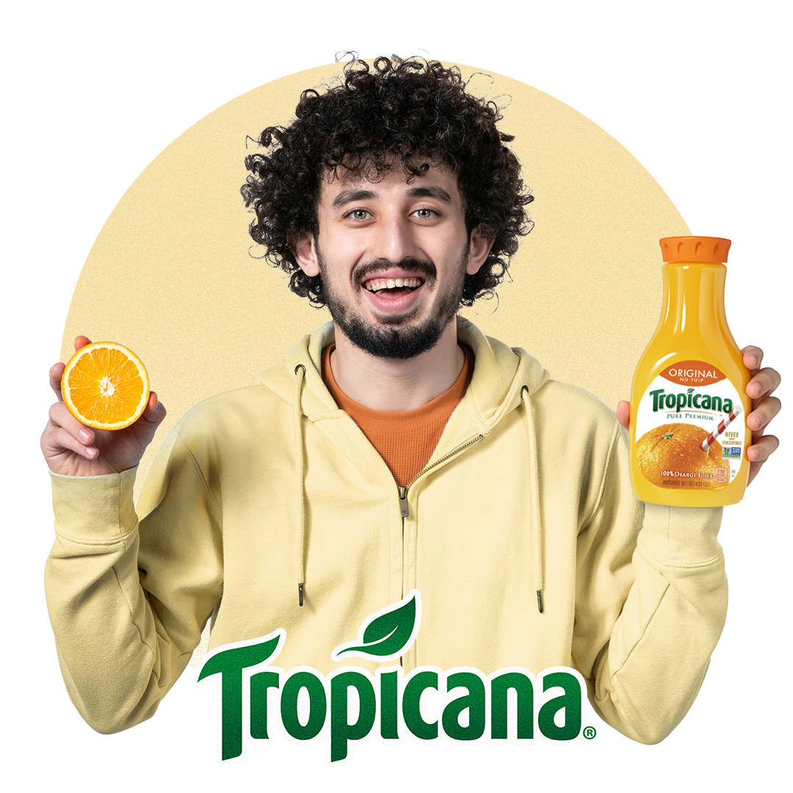

Social Mixed
A mix of social media posts
Posts created for social media purposes, various types tailored to different companies.


Posts created for social media purposes, various types tailored to different companies.